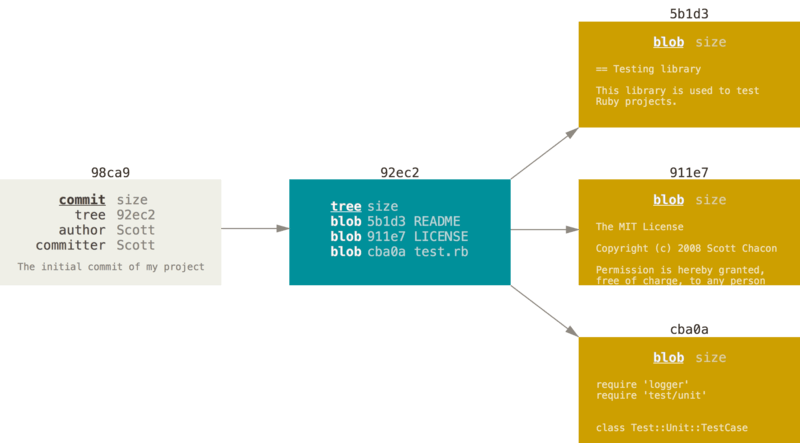

Nearly every VCS has some form of branching support. Branching means you diverge from the main line of development and continue to do work without messing with that main line. In many VCS tools, this is a somewhat expensive process, often requiring you to create a new copy of your source code directory, which can take a long time for large projects.
Some people refer to Git’s branching model as its “killer feature,” and it certainly sets Git apart in the VCS community. Why is it so special? The way Git branches is incredibly lightweight, making branching operations nearly instantaneous, and switching back and forth between branches generally just as fast. Unlike many other VCSs, Git encourages workflows that branch and merge often, even multiple times in a day. Understanding and mastering this feature gives you a powerful and unique tool and can entirely change the way that you develop.
Subsection4.4.1Branches in a Nutshell
To really understand the way Git does branching, we need to take a step back and examine how Git stores its data.
As you may remember from Subsection 4.2.6, Git doesn’t store data as a series of changesets or differences, but instead as a series of snapshots.
When you make a commit, Git stores a commit object that contains a pointer to the snapshot of the content you staged. This object also contains the author’s name and email address, the message that you typed, and pointers to the commit or commits that directly came before this commit (its parent or parents): zero parents for the initial commit, one parent for a normal commit, and multiple parents for a commit that results from a merge of two or more branches.
To visualize this, let’s assume that you have a directory containing three files, and you stage them all and commit. Staging the files computes a checksum for each one (the SHA-1 hash we mentioned in ,Subsection 4.2.6, stores that version of the file in the Git repository (Git refers to them as blobs), and adds that checksum to the staging area:
When you create the commit by running git commit, Git checksums each subdirectory (in this case, just the root project directory) and stores them as a tree object in the Git repository. Git then creates a commit object that has the metadata and a pointer to the root project tree so it can re-create that snapshot when needed.
Your Git repository now contains five objects: three blobs (each representing the contents of one of the three files), one tree that lists the contents of the directory and specifies which file names are stored as which blobs, and one commit with the pointer to that root tree and all the commit metadata.

Figure4.4.1.A commit and its tree
If you make some changes and commit again, the next commit stores a pointer to the commit that came immediately before it.
Figure4.4.2.Commits and their parents
A branch in Git is simply a lightweight movable pointer to one of these commits. The initial branch name (which is also by default the default branch) in Git was master until more recent versions of Git when it became main. As you start making commits, you’re given a main branch that points to the last commit you made. Every time you commit, the main branch pointer moves forward automatically.
Note: The “master” or "main" branch in Git is not a special branch. It is exactly like any other branch. The only reason nearly every repository has one or the other is that the git init command creates one by default and most people don’t bother to change its name. However, Git 2.28.0, released in July 2020, introduced the init.defaultBranch configuration option, which allows Git users to define and configure a default branch name other than the one chosen by Git.
Note: For the rest of this chapter, we will use both "main" and "master" interchangably because open-source contributors are likely to see one or the other, but not both, depending at least partially on the age of the project.
Figure4.4.3.A branch and its commit history
Creating a New Branch.
What happens when you create a new branch? Well, doing so creates a new pointer for you to move around. Let’s say you want to create a new branch called testing. You do this with the git branch command:
$ git branch testing
This creates a new pointer to the same commit you’re currently on.
Figure4.4.4.Two branches pointing into the same series of commits
How does Git know what branch you’re currently on? It keeps a special pointer called HEAD. Note that this is a lot different than the concept of HEAD in other VCSs you may be used to, such as Subversion or CVS. In Git, this is a pointer to the local branch you’re currently on. In this case, you’re still on master. The git branch command only created a new branch — it didn’t switch to that branch.
Figure4.4.5.HEAD pointing to a branch
You can easily see this by running a simple git log command that shows you where the branch pointers are pointing. This option is called --decorate.
$ git log --oneline --decorate
f30ab (HEAD -> master, testing) Add feature #32 - ability to add new formats to the central interface
34ac2 Fix bug #1328 - stack overflow under certain conditions
98ca9 Initial commit
You can see the master and testing branches that are right there next to the f30ab commit.
Switching Branches.
To switch to an existing branch, you run the git checkout command. Let’s switch to the new testing branch:
$ git checkout testing
This moves HEAD to point to the testing branch.
Figure4.4.6.HEAD points to the current branch
What is the significance of that? Well, let’s do another commit:
$ git commit -a -m 'made a change'
Figure4.4.7.The HEAD branch moves forward when a commit is made
This is interesting, because now your testing branch has moved forward, but your master branch still points to the commit you were on when you ran git checkout to switch branches. Let’s switch back to the master branch:
$ git checkout master
git logallall
If you were to run git log right now, you might wonder where the "testing" branch you just created went, as it would not appear in the output.
The branch hasn’t disappeared; Git just doesn’t know that you’re interested in that branch and it is trying to show you what it thinks you’re interested in. In other words, by default, git log will only show commit history below the branch you’ve checked out.
To show commit history for the desired branch you have to explicitly specify it: git log testing. To show all of the branches, add --all to your git log command.
Figure4.4.8.HEAD moves when you checkout
That command did two things. It moved the HEAD pointer back to point to the master branch, and it reverted the files in your working directory back to the snapshot that master points to. This also means the changes you make from this point forward will diverge from an older version of the project. It essentially rewinds the work you’ve done in your testing branch so you can go in a different direction.
Note: Switching branches changes files in your working directory
It’s important to note that when you switch branches in Git, files in your working directory will change. If you switch to an older branch, your working directory will be reverted to look like it did the last time you committed on that branch. If Git cannot do it cleanly, it will not let you switch at all.
Let’s make a few changes and commit again:
$ git commit -a -m 'made other changes'
Now your project history has diverged. You created and switched to a branch, did some work on it, and then switched back to your main branch and did other work. Both of those changes are isolated in separate branches: you can switch back and forth between the branches and merge them together when you’re ready. And you did all that with simple branch, checkout, and commit commands.
Figure4.4.9.Divergent history
You can also see this easily with the git log command. If you run git log --oneline --decorate --graph --all it will print out the history of your commits, showing where your branch pointers are and how your history has diverged.
$ git log --oneline --decorate --graph --all
* c2b9e (HEAD, master) Made other changes
| * 87ab2 (testing) Made a change
|/
* f30ab Add feature #32 - ability to add new formats to the central interface
* 34ac2 Fix bug #1328 - stack overflow under certain conditions
* 98ca9 initial commit of my project
Because a branch in Git is actually a simple file that contains the 40 character SHA-1 checksum of the commit it points to, branches are cheap to create and destroy. Creating a new branch is as quick and simple as writing 41 bytes to a file (40 characters and a newline).
This is in sharp contrast to the way most older VCS tools branch, which involves copying all of the project’s files into a second directory. This can take several seconds or even minutes, depending on the size of the project, whereas in Git the process is always instantaneous. Also, because we’re recording the parents when we commit, finding a proper merge base for merging is automatically done for us and is generally very easy to do. These features help encourage developers to create and use branches often.
Let’s see why you should do so.
Note: Creating a new branch and switching to it at the same time. It’s typical to create a new branch and want to switch to that new branch at the same time — this can be done in one operation with git checkout -b <newbranchname>.
Note: From Git version 2.23 onwards you can use git switch instead of git checkout to:
Switch to an existing branch: git switch testing-branch.
Create a new branch and switch to it: git switch -c new-branch. The -c flag stands for create, you can also use the full flag: --create.
Return to your previously checked out branch: git switch -.
Checkpoint4.4.10.Learning Git Branching.
For a superb interactive tutorial on Git branching, go to Learn Git Branching 1
learngitbranching.js.org
and try at least the four tutorials in the interactive sequence. Then blog about what you learned.
Section Summary.
We’ve covered basic branching and merging in Git. You should feel comfortable creating and switching to new branches, switching between branches and merging local branches together. You should also be able to share your branches by pushing them to a shared server, working with others on shared branches and rebasing your branches before they are shared. Next, we’ll cover what you’ll need to run your own Git repository-hosting server.
Checkpoint4.4.11.
Git’s branching model is considered a “killer feature” due to its:
Cost-effective branching process, where creating new branches is instant and does not require duplicating the entire project directory.
Great job! Git’s branching model allows for efficient and cost-effective branching by creating lightweight branches that do not duplicate the entire project directory.
Compatibility with other Version Control Systems, allowing easy migration of repositories.
While Git is widely used and has many benefits, its "killer feature" related to branching is not directly tied to compatibility with other Version Control Systems.
Advanced conflict resolution algorithms that automatically resolve merge conflicts but can accidentally delete files from the current branch.
Git does have conflict resolution mechanisms, but it is not the primary "killer feature".
Ability to create branches that are completely isolated from the main development line, ensuring a clean and organized project history.
While this is a feature of Git’s branching model, it’s not considered the main "killer feature" that sets Git apart from other Version Control Systems.